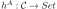
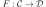
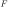
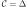

Next: Chapter 3 Up: Part I. Derived Functors Previous: Part I. Derived Functors Contents
You've got a sort of generalization of realization-nerve here, where if you consider for  the Yoneda embedding and  some functor, the expression:
Which you'll notice reduces straight down to the case of realization of some simplicial object in against the cosimplicial object given by  for , which is by definition of the Kan extension supposed to be an adjoint to the singular complex.